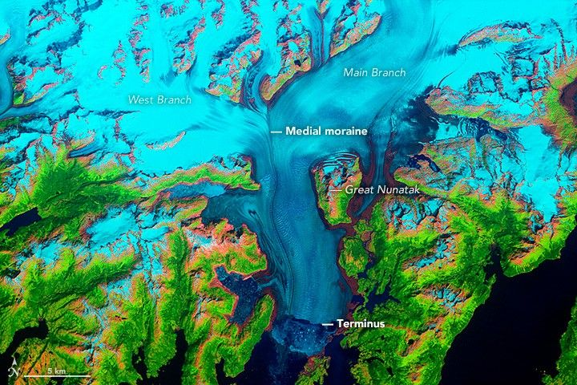
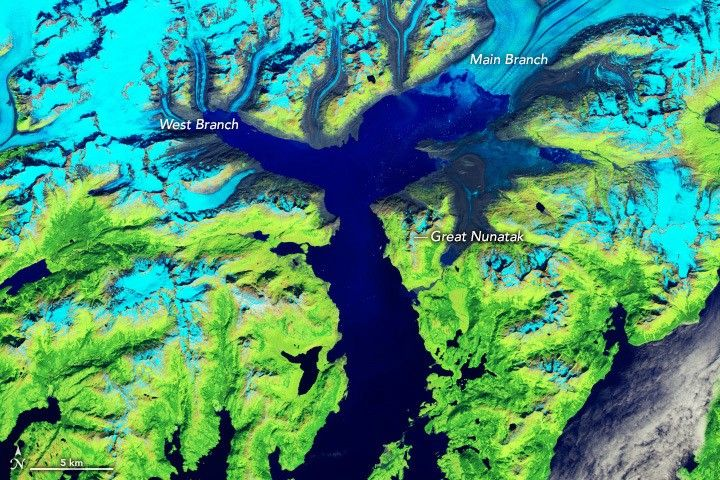
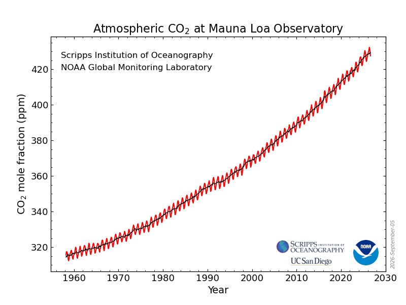

De quoi parle-t-on ?
La seconde moitié de la phrase compte autant que la première. Le climat se mesure sur des décennies, pas sur une saison. Une semaine froide en avril ne dit rien du climat, pas plus qu'une journée de canicule à elle seule.
Les deux mots ne sont donc pas synonymes : le réchauffement est une partie du dérèglement. C'est pour cette raison qu'un hiver rigoureux ou des pluies exceptionnelles ne contredisent pas le réchauffement, ils peuvent au contraire en faire partie.
On imagine le climatosceptique comme quelqu'un qui nie le réchauffement climatique. C'est vrai, mais ce n'est qu'un cas sur trois.
1. Celui qui nie le réchauffement
« Il a neigé en avril : il est où, votre réchauffement ? »
2. Celui qui nie la responsabilité humaine
« Le climat a toujours changé, bien avant les usines. »
3. Celui qui nie les conséquences
« Deux degrés de plus, on s'adaptera. »
Les distinguer n'est pas un détail. On ne répond pas de la même manière à quelqu'un qui doute des mesures, à quelqu'un qui accepte les mesures mais pas leur cause, et à quelqu'un qui accepte tout sauf la gravité.
Quatre phrases entendues. Laquelle des trois positions chacune exprime-t-elle ?
Exercice sur les trois sortes de climatosceptiques. La question à se poser : qu'est-ce que la personne refuse ? Les mesures elles-mêmes (le réchauffement), leur cause (la responsabilité humaine), ou leur gravité (les conséquences).
Selon l'Observatoire international Climat et Opinions publiques (Ipsos et EDF, 2024), 33 % des Français sont climatosceptiques :
Le climatoscepticisme ne diminue pas. La conscience de la responsabilité humaine avait progressé pendant plusieurs années, mais depuis 2023, la tendance s'inverse : l'urgence climatique cède du terrain face aux préoccupations économiques.
Comment sait-on que c'est réel, et humain ?
Le réchauffement n'est pas déduit d'une seule mesure. Il est observé par des instruments différents, sur des éléments différents, qui disent tous la même chose :
- la hausse de la température moyenne mondiale ;
- l'accumulation de chaleur dans les océans ;
- la fonte des glaciers et des calottes polaires ;
- l'élévation du niveau moyen des mers ;
- la hausse des concentrations de gaz à effet de serre.


Images satellite NASA (fausses couleurs : la glace apparaît en bleu clair, la végétation en vert, l'eau en bleu foncé).

Le CO₂ mesuré sans interruption à l'observatoire de Mauna Loa (Hawaï) depuis 1958.
Chaque cause possible du réchauffement (le Soleil, les volcans, les gaz à effet de serre) laisserait une trace différente. On sait que l'humain est en cause parce que ce sont ses traces à lui que l'on retrouve.
La haute atmosphère se refroidit pendant que la basse atmosphère se réchauffe. Si le Soleil chauffait davantage, toutes les couches se réchaufferaient. Ce contraste est ce que produisent des gaz qui retiennent la chaleur près du sol : la stratosphère se refroidit alors que la troposphère se réchauffe.
L'évolution des températures correspond à ce qui avait été prédit. La hausse observée coïncide avec ce que l'on attendait d'une augmentation des gaz à effet de serre.
C'est un argument climatosceptique fréquent, et les chiffres sont justes :
| Composition de l'atmosphère | Part |
|---|---|
| Azote | ≈ 78 % |
| Oxygène | ≈ 21 % |
| Autres gaz | ≈ 0,96 % |
| CO₂ | ≈ 0,04 % |
| dont CO₂ d'origine humaine | ≈ 0,016 % |
Sur un camembert, 0,04 % est invisible. C'est précisément ce qui rend l'argument convaincant : on confond une petite quantité avec un petit effet.
Or l'azote et l'oxygène laissent passer la chaleur que la Terre renvoie vers l'espace. Le CO₂, lui, la retient. Ce n'est pas sa part dans l'air qui compte, c'est ce qu'il fait. Et sa concentration a augmenté de plus d'un tiers depuis le début des mesures à Mauna Loa, en 1958.
Une comparaison : une alcoolémie de 0,5 gramme par litre de sang, la limite légale pour conduire, représente environ 0,05 % du sang. Personne n'en conclut que c'est trop peu pour avoir un effet.
La désinformation climatique sur les réseaux
Une étude du CNRS (Chavalarias et al., 2023, projet Climatoscope) a analysé deux années d'échanges sur Twitter. Ce qu'elle montre :
- une forte polarisation sur la question ;
- ce sont les mêmes comptes qui étaient antivax pendant le COVID, puis pro-russes pendant la guerre en Ukraine ;
- aux États-Unis, le climatoscepticisme est très associé à Donald Trump ;
- les vrais spécialistes du climat parlent du climat. Les « références » climatodénialistes, elles, parlent de tout. Ce n'est pas bon signe ;
- ces comptes ne sont pas affiliés aux partis politiques traditionnels : ils se retrouvent plutôt autour de personnalités politiques devenues des « références complotistes ».
Les comptes climatodénialistes :
Sont plus toxiques
Leurs échanges contiennent davantage d'insultes et d'attaques.
Se font davantage suspendre
Les plateformes les sanctionnent plus souvent que les autres comptes.
Sont plus souvent des robots
6 % de comptes automatisés, contre 3,5 % chez les autres.
Pour décrédibiliser la science du climat, ces comptes s'appuient sur une rhétorique en cinq temps, les « 5 D ». Chacun correspond à une technique connue :
| Le D | La technique | En pratique |
|---|---|---|
| Discréditer | Attaquer l'éthos | On s'en prend à la personne (le scientifique, le journaliste, le militant) plutôt qu'à ce qu'elle dit. |
| Déformer | L'homme de paille | On caricature la position adverse pour la réfuter plus facilement. |
| Distraire | Le whataboutism | « Et la Chine, alors ? » On change de sujet au lieu de répondre. |
| Dissuader | La menace | On fait comprendre qu'il sera coûteux de continuer à prendre la parole. |
| Diviser | Diviser pour mieux régner | On oppose les groupes entre eux (villes et campagnes, écologistes et travailleurs) pour empêcher tout accord. |
On y ajoute souvent un sixième D, douter : il ne s'agit pas de prouver que la science a tort, seulement de faire croire que la question n'est pas tranchée.
Cinq réactions sous une publication sur le climat. Quelle technique chacune utilise-t-elle ?
Exercice sur les 5 D. Discréditer vise la personne, déformer caricature ce qu'elle dit, distraire change de sujet, dissuader fait peur à celui qui parle, diviser oppose les groupes entre eux.
Sur le court terme
Les réactions dénialistes réduisent la portée des rapports du GIEC au moment de leur publication.
Sur le long terme
Le consensus scientifique fonctionne : les conclusions du GIEC finissent par s'imposer.
C'est une bonne nouvelle : la désinformation retarde, elle ne gagne pas.
Nier le réchauffement devient difficile. Une autre méthode se développe sur les réseaux : ne plus s'attaquer au réchauffement climatique, mais aux solutions (Nicolosi et al., 2025).
Et pour cela, un ressort revient souvent : le complotisme. Une mesure écologique n'est plus discutée pour ce qu'elle coûte ou rapporte, elle est présentée comme un plan caché, destiné à contrôler la population ou à enrichir quelqu'un.
Le piège est plus subtil que le déni : on peut accepter toute la science du climat et se retrouver, malgré tout, à rejeter chaque réponse qu'on lui apporte.
Pendant la formation, une série de graphiques et de documents sur le climat a été projetée, avec une consigne : trouvez ce qui ne va pas.
Si vous n'étiez pas là, ou si vous avez oublié : combien de ces documents étaient trompeurs ?
Aucun. Ils étaient tous vrais.
Quand on nous demande de trouver l'erreur, on en trouve une. Cet exercice montre l'autre face de la désinformation : à force de se méfier de tout, on finit par douter aussi de ce qui est solide. Douter de tout n'est pas de l'esprit critique, c'est exactement ce que cherche le sixième D.
La réponse du jeu. Tous les documents projetés étaient vrais. Quand on cherche une erreur, on en trouve une : douter de tout n'est pas de l'esprit critique, c'est ce que cherche la désinformation.
Pourquoi les preuves ne suffisent pas
C'est l'idée la plus répandue : si quelqu'un doute, il manque d'informations, et il suffit de les lui donner. Les résultats des études sont formels : bof.
Car notre cerveau ne fonctionne pas dans le sens qu'on imagine. Penser au réchauffement climatique n'est pas agréable. Et quand une conclusion nous dérange, nous ne la cherchons pas, nous cherchons de quoi la repousser.
« Nous n'avons pas un scientifique en nous, nous avons un avocat. » Un scientifique part des faits et accepte la conclusion qu'ils imposent. Un avocat connaît déjà sa conclusion et cherche les arguments pour la défendre.
C'est pour cela qu'une preuve de plus renforce parfois la position de celui qui doute : elle lui donne une occasion de plus de mobiliser sa défense (Stoetzer et Zimmermann, 2024).
Il y a des raisons, et elles sont rarement scientifiques :
Psychologiques
Le sujet est angoissant, et le raisonnement motivé protège de cette angoisse.
Sociales
On adopte la position de son groupe, de son camp, de son entourage.
Complotistes
Le réchauffement devient un mensonge organisé par « ceux d'en haut ».
Économiques
Les réponses au réchauffement menacent un emploi, un revenu, un mode de vie.
Aux États-Unis, les facteurs qui prédisent le plus le déni climatique (Gounaridis et Newell, 2024), du plus fort au plus faible :
- l'affiliation politique ;
- le niveau de diplôme ;
- le taux de vaccination contre le COVID ;
- l'intensité carbone de l'économie régionale (le poids des énergies fossiles dans la région) ;
- le revenu.
L'étude estime qu'environ 15 % des Américains nient le réchauffement. Et ce qui prédit le mieux leur opinion, ce n'est pas ce qu'ils savent, c'est le camp politique auquel ils appartiennent.
On pourrait penser qu'une fois la catastrophe vécue, le doute disparaît. Une étude récente (Andreotta et al., 2026) a interrogé plus de 1 000 Australiens autour des gigantesques incendies du « Black Summer » de 2019-2020, en trois temps : avant le pic des incendies (automne 2019), juste après (février 2020), puis un mois plus tard (mars 2020).
Les convaincus
Ne doutent pas de l'origine humaine et s'inquiètent des conséquences. Plutôt à gauche, ils pensent que la nature a une capacité limitée à se remettre des dommages.
Les hésitants
Pas de profil type, politiquement plus neutres, mais plus attirés par les théories du complot que les deux autres groupes.
Les sceptiques
Doutent du réchauffement et de sa cause humaine. Plutôt conservateurs, très sûrs de leurs connaissances, ils pensent que la nature se remet de tout.
| Part de la population | Avant le pic | Un mois après |
|---|---|---|
| Convaincus | 65 % | 54 % |
| Hésitants | 27 % | 37 % |
| Sceptiques | 8 % | 8 % |
Résultat : la catastrophe n'a convaincu personne de plus. Les convaincus ont même un peu reculé au profit des hésitants, et les sceptiques n'ont pas bougé. L'écart reste à la limite de ce que l'étude peut démontrer, mais il ne va pas dans le sens espéré.
Pourquoi ? Une catastrophe ne fait changer d'avis que si on l'attribue au climat. Or pendant les incendies, une fausse information a circulé sur les réseaux sociaux, puis dans une partie de la presse : les feux auraient été allumés par des centaines de pyromanes. En mars 2020, l'affirmation « plus de cent pyromanes ont contribué aux incendies » était acceptée par :
- 89 % des sceptiques ;
- 57 % des hésitants ;
- et même 39 % des convaincus.
La fausse explication a pris la place de la vraie. Et la pandémie de COVID, arrivée au même moment, a détourné l'attention.
Ce que recommandent les auteurs. Ne pas se contenter de dire « c'est faux », mais donner une autre explication : le plus grand de ces feux a été allumé par la foudre. Expliquer le mécanisme : le réchauffement n'allume pas les feux, il crée la chaleur et la sécheresse qui les rendent immenses. Et s'adresser d'abord aux hésitants, qui révisent leur avis presque autant que les convaincus.
Ni les preuves, ni les événements ne suffisent. Il faut donc s'y prendre autrement.
Insulter, culpabiliser. Ça soulage celui qui parle, et ça ferme la discussion. Il ne faut pas appuyer.
Jouer sur la peur. Ça ne marche que sur les personnes déjà convaincues. Pour les sceptiques, cela risque de produire l'effet inverse.
Comment en parler
Plutôt que de convaincre, écouter. Il faut comprendre les motivations profondes de la personne : ce qu'elle craint, ce qu'elle protège, ce qu'elle a à perdre. Tant qu'on ne les connaît pas, on répond à côté.
Ne pas dire « c'est faux », mais proposer une explication alternative. Un peu de psychologie pour comprendre pourquoi :
Essayez de ne PAS penser à un éléphant en tutu.
C'est raté. Pour comprendre la phrase, il a fallu imaginer l'éléphant.
Le cerveau ne sait pas penser directement le négatif. Un démenti, c'est une information plus un « non ». Or l'information reste, et le « non » s'oublie. Répéter « non, le réchauffement n'est pas un mensonge », c'est encore faire entendre « mensonge ».
D'où le conseil : plutôt que de réfuter, proposer une autre explication, qui prend la place de la première.
L'expérience de l'éléphant. Essayez de ne pas penser à un éléphant en tutu : c'est impossible, il faut l'imaginer pour comprendre la phrase. Un démenti est une information plus un « non », et le « non » s'oublie. Plutôt que de réfuter, mieux vaut proposer une explication alternative.
Trouver des arguments qui s'alignent avec ses valeurs. Un argument qui heurte les valeurs de quelqu'un est rejeté avant d'être examiné. Un argument qui s'appuie sur elles (protéger sa famille, défendre son territoire, l'indépendance du pays, l'économie locale) a une chance d'être écouté.
Trouver un porte-parole de son camp. Vous n'êtes peut-être pas le meilleur interlocuteur. Nous écoutons plus volontiers quelqu'un de notre groupe (l'endogroupe) que quelqu'un d'un groupe extérieur (l'exogroupe). Le même message porté par une personne de son camp passe mieux.
Montrer le consensus. Non pas les preuves scientifiques, mais le fait que les scientifiques sont quasiment tous d'accord. Il est difficile de juger soi-même une courbe de température ; il est facile de comprendre que presque tous les spécialistes du monde arrivent à la même conclusion.
Le GIEC ne mène pas ses propres recherches : il fait la synthèse de milliers d'études publiées.
Rendre le réchauffement climatique concret. Ne parlez pas des ours polaires ou du « un degré de plus ». Parlez des impacts concrets, ici et maintenant, et des avantages concrets des réponses qu'on y apportera.
Trouver des bénéfices à la lutte. Quels sont les avantages à lutter contre le réchauffement ou à s'y adapter ? Des emplois, des revenus, le développement de nouvelles technologies.
Établir des normes. L'humain est un animal social. S'il devient « normal » de trier ses déchets, de recycler, de limiter sa consommation de viande, les gens le feront plus naturellement, sans avoir eu besoin d'être convaincus.
Présenter les actions comme positives et faciles. L'humain fonctionne par coûts et bénéfices. Une action vécue comme un sacrifice sera repoussée ; la même action présentée comme simple et avantageuse sera adoptée.
Former un consensus politique. L'affiliation politique étant le facteur qui pèse le plus, un accord entre les camps politiques neutraliserait ce levier. C'est le plus efficace, et le plus difficile. Bon courage !
Trois phrases entendues à table. Pour chacune, quelle réponse a le plus de chances de faire avancer l'échange ?
Exercice de mise en situation. Les réponses qui ouvrent la discussion ont en commun d'écouter avant de répondre, de s'appuyer sur ce qui compte pour la personne, de montrer le consensus plutôt que d'accumuler les preuves, et de proposer une explication plutôt qu'un simple « c'est faux ». Insulter, culpabiliser ou faire peur provoquent l'effet inverse.
- Le réchauffement climatique est réel, et il est d'origine humaine.
- Il y a encore beaucoup de sceptiques, et ni les preuves, ni les événements ne suffiront à les convaincre.
- Le climat est devenu un terrain de désinformation et de manipulation en ligne, porté par les mêmes comptes que d'autres sujets.
- Mais ce que l'on sait de la psychologie permet d'actionner des leviers pour changer les choses, à l'échelle individuelle et collective.